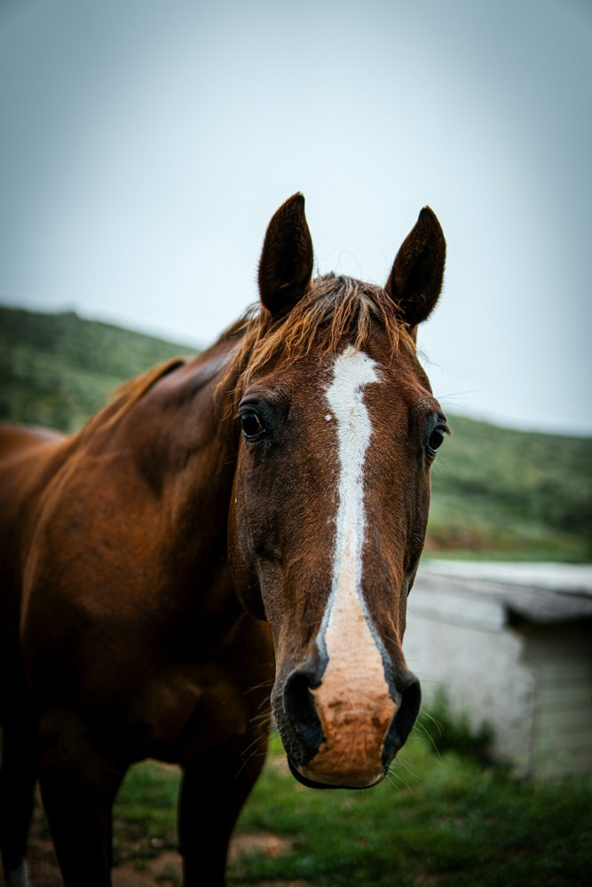
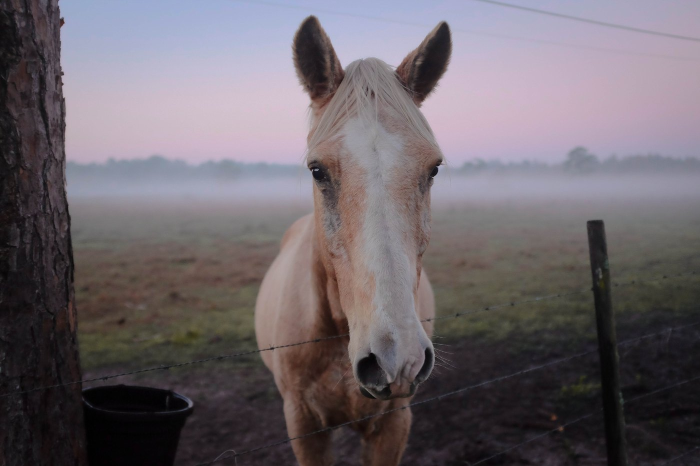
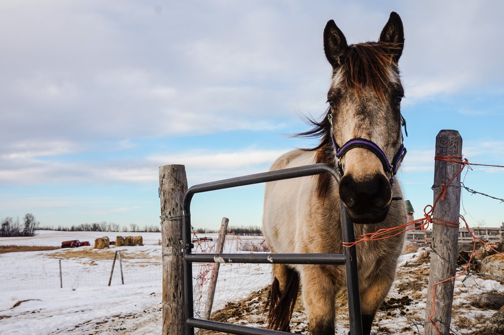
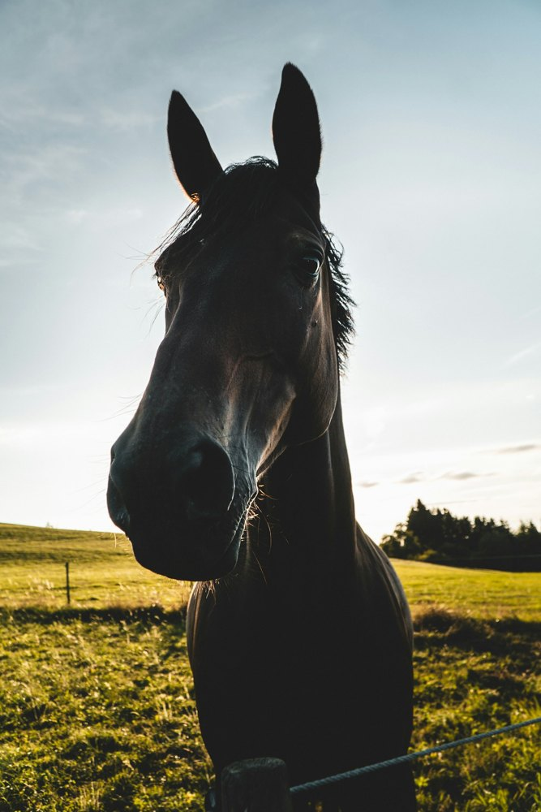
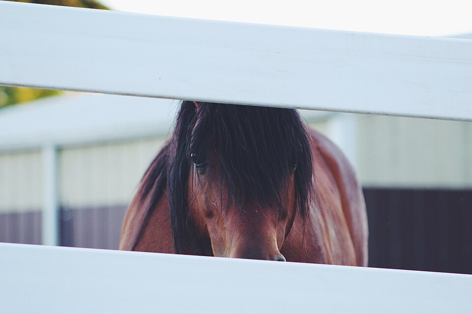
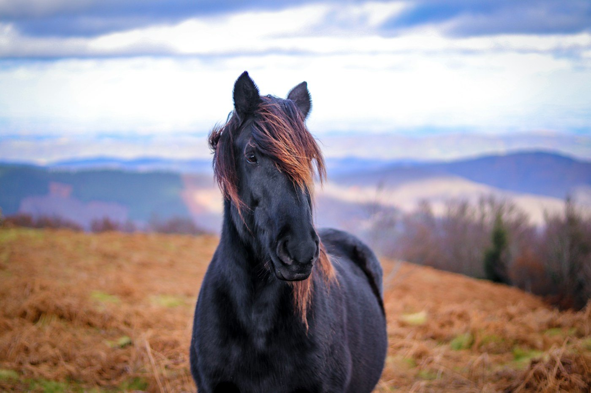

Aurora
Cullen Carter · @caseshots
Tệp: aurora.jpg. Ảnh này có thể được sử dụng lại ở khu vực giới thiệu của trang tổng quan.
Sáu ảnh chụp ngựa thật được dùng để minh họa hồ sơ giả lập. Tên, giống, chủ sở hữu và tình trạng trong demo không mô tả con ngựa thật trong ảnh. Các nhiếp ảnh gia không liên kết hay bảo trợ cho STRIDE.
Ảnh đã được đổi kích thước và nén JPEG để sử dụng ngoại tuyến. Không dùng ảnh do AI tạo. Nguồn và giấy phép được kiểm tra ngày 28/10/2026.

Tệp: aurora.jpg. Ảnh này có thể được sử dụng lại ở khu vực giới thiệu của trang tổng quan.

Tệp: golden-arrow.jpg. Wikimedia Commons ghi nhận ảnh được công bố năm 2017 theo CC0 trước khi Unsplash đổi giấy phép.

Tệp: silver-storm.jpg. Ảnh gốc “Gray horse in a snowy enclosure”, công bố năm 2016 theo CC0.


Tệp: desert-rose.jpg. Ảnh gốc “Horse and Fence”, công bố tháng 2/2017 theo CC0.

Tệp: thunderbolt.jpg. Ảnh gốc chụp tại vùng Pyrenees, Pháp.